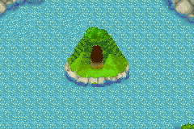
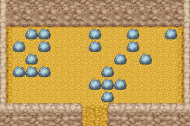

 
大部分时间这个矿石场都被湖水包围着，但到了冬季湖水结冰后就可以进去了。 里面可以挖到一些泉之矿石场所挖不到的东西。 有兴趣的话还可以丢根黄瓜到湖里看看。
| 名称 | 价格 | 作用 | 层数 |
|---|---|---|---|
| 废矿石 | 1g | - | 所有层数 |
| 月亮石 | 55g | - | 地下个位数是8的层数及地下255 |
| 沙漠玫瑰石 | 60g | - | 地下个位数是9的层数及地下255 |
| 粉红钻石 | 10000g | - | 地下30,70,90,110,130,170,190,210,220,230,240,250～255每层只有3个 |
| 亚历山大石 | 10000g | - | 地下50,100,150,200,210,230,240,250～255每层只有3个 |
| 钻石 | 100g | - | 地下10,20,30,70,90,110,130,170,190,201～255 |
| 祖母绿 | 80g | - | 地下个位数是5的层数及地下40,60,80,120,140,160,180,201～255 |
| 红宝石 | 75g | - | 地下50,100,150,200以外的层数 |
| 黄玉 | 70g | - | 地下50,100,150,200以外的层数 |
| 橄榄石 | 68g | - | 地下50,100,150,200以外的层数 |
| 萤石 | 65g | - | 地下50,100,150,200以外的层数 |
| 玛瑙 | 62g | - | 地下50,100,150,200以外的层数 |
| 紫水晶 | 60g | - | 地下50,100,150,200以外的层数 |
| 河童之玉 | - | 秘宝，总共有九个要收集 | 地上1 地下40,60,80,120,140,160,180,255 |
| 名称 | 价格 | 作用 | 层数 |
|---|---|---|---|
| 钱 | 随机 | - | 所有层数 |
| 黑色草 | 10g | 恢复少许体力和疲劳(体力+5疲劳-5) | 所有层数 |
| 力量果实 | - | 恢复体力较少疲劳增加主角体能上限 | 地下19 |
| 诅咒的鱼杆 | - | 农具 | 地下29 |
| 诅咒的锄头 | - | 农具 | 地下39 |
| 诅咒的斧头 | - | 农具 | 地下49 |
| 诅咒的锤子 | - | 农具 | 地下59 |
| 诅咒的水壶 | - | 农具 | 地下69 |
| 诅咒的镰刀 | - | 农具 | 地下79 |